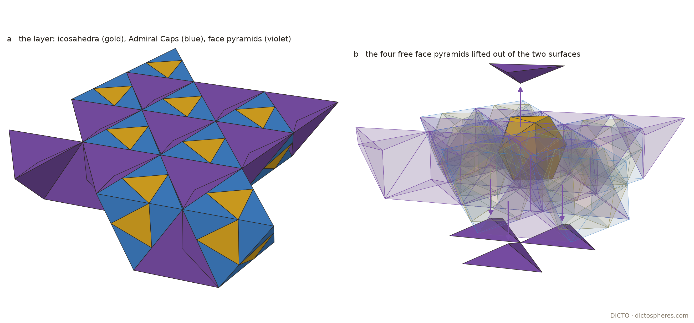

A wall of bricks stands only by gravity and mortar. Some shapes do better: laid in one layer, each piece is held by its neighbours so that it cannot be slid or twisted out, and the layer holds itself together with no glue. Dyskin and his colleagues called this topological interlocking. It matters for anyone who builds these solids in cardboard or stone.
A piece in a layer is locked if, with all its neighbours held fixed, no small rigid motion of it (a velocity v and a turning rate ω) avoids pressing into some neighbour. At every corner q of every contact polygon (the exact overlap of the two touching faces) the motion must satisfy
(v + ω × (q − c))·n ≤ 0,
n the piece's outward face normal and c its centre. The piece is locked when only v = ω = 0 satisfies all of these; we decide this by linear programming, separately for slides alone and for slides with twists (Section 4). The test is first-order: it rules out every small motion of one piece at a time.
Cut the octet between two neighbouring (111) planes. The layer holds octahedra with a face on each plane, and tetrahedra with a face on one plane and the opposite corner on the other, all meeting face to face (#47, #92). Figure 1 shows it.
Proof. Tetrahedra: let u be the outward normal of the face on the surface. Every other face has outward normal m with u·m = cos(π − α) = −1/3 < 0, so the motion v = u moves away from every neighbour. Octahedra: centre the octahedron at 0; its two faces on the planes are free, the other six are whole contact faces in three opposite pairs ±m. For a corner r of the face with normal m, the opposite face has the corner −r, and the two conditions (v + ω × r)·m ≤ 0 and (v − ω × r)·(−m) ≤ 0 add up to (ω × r)·m ≤ 0. The three corners of a face add up to a multiple of m, so these three numbers add up to 0 and each is 0. Then the conditions read v·m ≤ 0 and −v·m ≤ 0, so v·m = 0 for three independent m, and v = 0. And ω·((r − g) × m) = 0 for the corners r of the face, g its centre; the vectors (r − g) × m span the plane perpendicular to m, so ω is parallel to m, for three non-parallel m, and ω = 0. ∎
Here α is the dihedral angle of the regular tetrahedron, cos α = 1/3. So the octet layer is not interlocking as a whole: its tetrahedra come out. Its octahedra are locked.

The icosahedron slab of #47 (Lemma 4) is one (111) layer of the octet of edge L = φ²/√2, its octahedra filled by Pacioli's icosahedron and DICTO's six Admiral Caps (Kaleidohedra finding F21) and its tetrahedra by face pyramids Q′ (a face of the tetrahedron joined to its centre). Each Admiral Cap is two tetrahedra over an icosahedron edge with a dent between: it is not convex. The same proof as for the octet's tetrahedra shows that a face pyramid whose base lies on the layer's surface can be lifted straight out: its other faces meet the base at the angle α/2, so their outward normals m satisfy u·m = −cos(α/2) < 0 for the outward normal u of the base.
Proof (computation). Exact contact polygons (Sutherland–Hodgman clipping of every pair of touching faces), then the linear programs of Section 1 in ℝ³ (slides) and ℝ⁶ (slides and twists), for the 21 interior Admiral Caps, 3 icosahedra and 22 face pyramids of the layer built from the engine data of #47. Calibration: the tetrahedron layer of Dyskin et al. (square midsections, neighbours turned 90°) gives all 21 interior blocks locked, as published; a layer of upright cubes gives every cube free. Slides alone and slides with twists give the same counts. ∎
So the Admiral layer holds itself together by shape alone, apart from a skin of face pyramids on its two surfaces: relevant to building it in cardboard or stone without glue.

The test of Section 1 is run by linear programming. For one piece, every contact polygon of every face that touches a neighbour gives one inequality (v + ω × (q − c))·n ≤ 0 per corner q. The programs fix one coordinate of (v, ω) to ±1 in turn, with all coordinates bounded by 1; a piece is locked when all twelve programs are infeasible, which is equivalent to the only admissible motion being zero. For slides alone the same is done in ℝ³ with six programs. Contact faces are found as pairs of faces with opposite normals in the same plane whose polygons overlap with area, and the contact polygon is their exact intersection (Sutherland–Hodgman clipping). Pieces made of several convex parts, such as the Admiral Cap, are tested as one rigid body. Neighbours are held fixed, and the outer ring of the layer is never tested.
The test is calibrated positively on the tetrahedron layer of Dyskin et al. and negatively on a layer of cubes (Figure 4): it separates the two.

Known, credited: topological interlocking, the interlocking tetrahedron layer and the interlocking layers of the other Platonic solids, octahedra included (Dyskin, Estrin, Kanel-Belov and Pasternak 2001, 2003); the tetrahedron and octahedron interlockings placed inside the tetrahedral–octahedral honeycomb, and interlocking blocks built from its tetrahedra and octahedra (Akpanya, Goertzen and Niemeyer 2024); Pacioli's icosahedron in the octahedron (1509). So the locking of a layer of octahedra is known. DICTO's earlier work, cited: the Admiral Caps (F21) and their slab (#47); the octet layers (#47, #92). New here: the mixed (111) slab of the octet itself, octahedra and tetrahedra together, with its split, every octahedron locked and every tetrahedron free (Proposition 1, not found in these sources), and the interlocking of the Admiral layer (Proposition 2).
Sources checked: Dyskin et al. (2003), used as the calibration case and reproduced. Akpanya, Goertzen and Niemeyer (2024, arXiv:2405.01944), read in the reference library copy on 7 November: their Figure 6 shows the tetrahedra- and octahedra-interlocking assemblies of Dyskin et al. inside the honeycomb; the mixed slab and the Admiral layer are not treated.
The same test on the Vacuus builds and DICTO's node and ring builds; which stacking layers lock their tetrahedra.
Study 2026-11-04-hopf-interlock (README parts (5), "Interlocking of DICTO's pieces", "ROTATIONS"): hopf_interlock.py (the octet slab, slides), interlock_pieces.py (slides; Dyskin calibration; the Admiral layer from admiral-network-pieces.json, the engine data of #47), interlock_rot.py (exact contact polygons, slides and twists in ℝ⁶). Figures: scripts/held_data.py rebuilds the four layers with the study's own code and reruns the slides-and-twists test, and scripts/render_held.py draws them. The rerun of 7 November gives again the counts above: Admiral layer 21 caps and 3 icosahedra locked, face pyramids 18 locked and 4 free (three bases on the lower surface, one on the upper); Dyskin's layer 21 locked; the cube layer every cube free; and in the octet layer every tested octahedron locked and every tested tetrahedron free, as Proposition 1 proves. These results are gathered with others in Chapter 4 of DICTO's book Space-Fillers and Lattice Moves (in preparation).